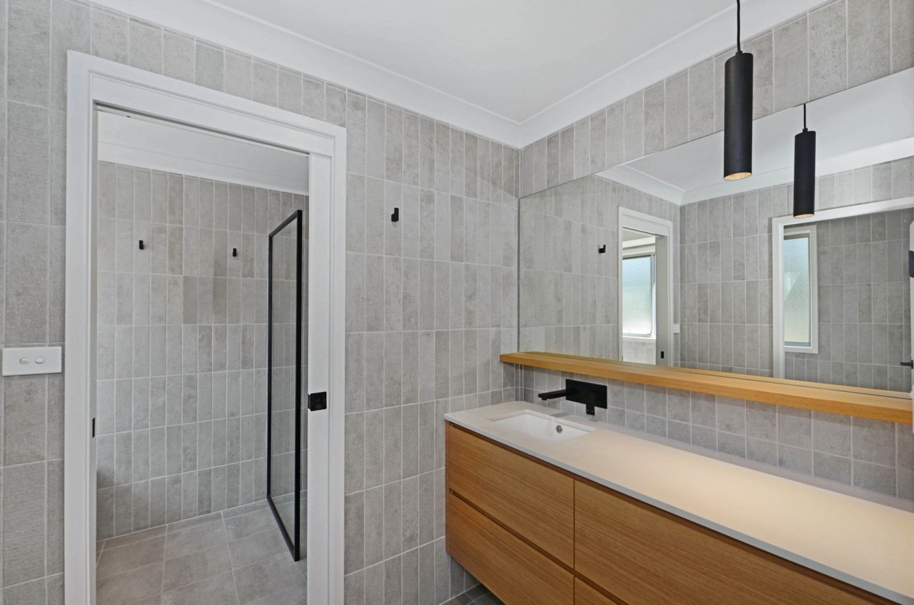
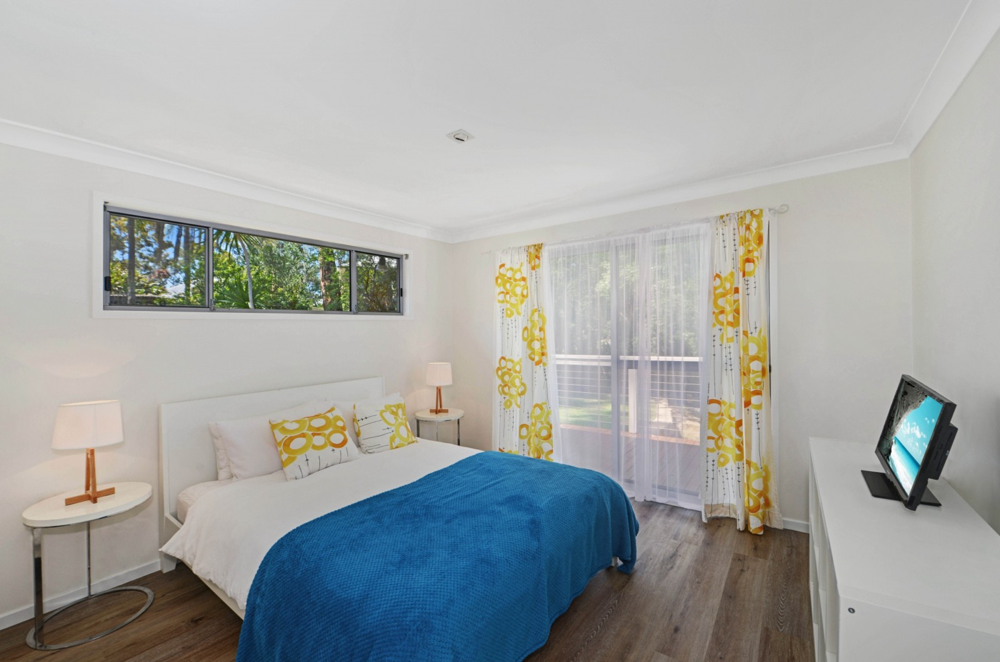
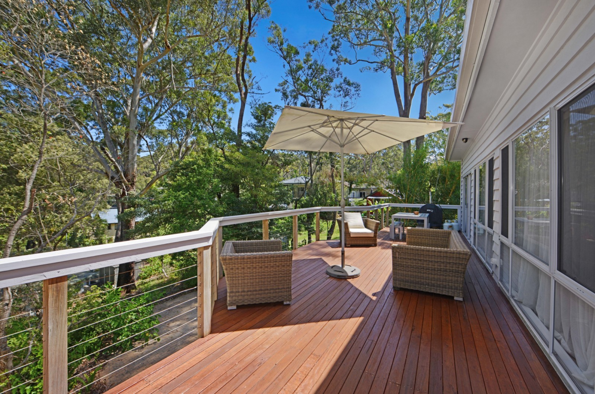
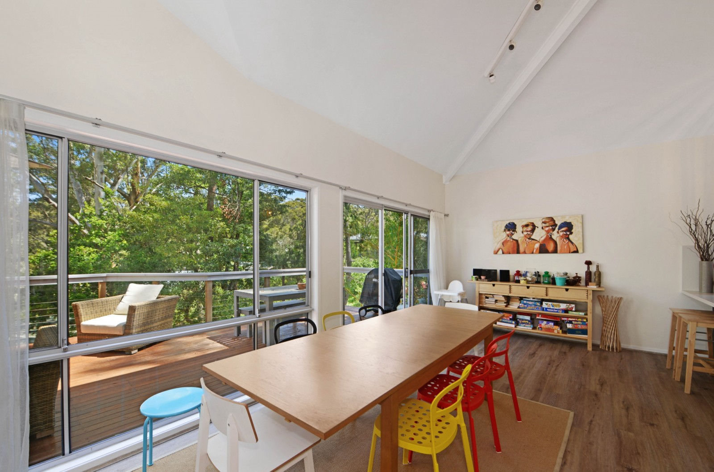
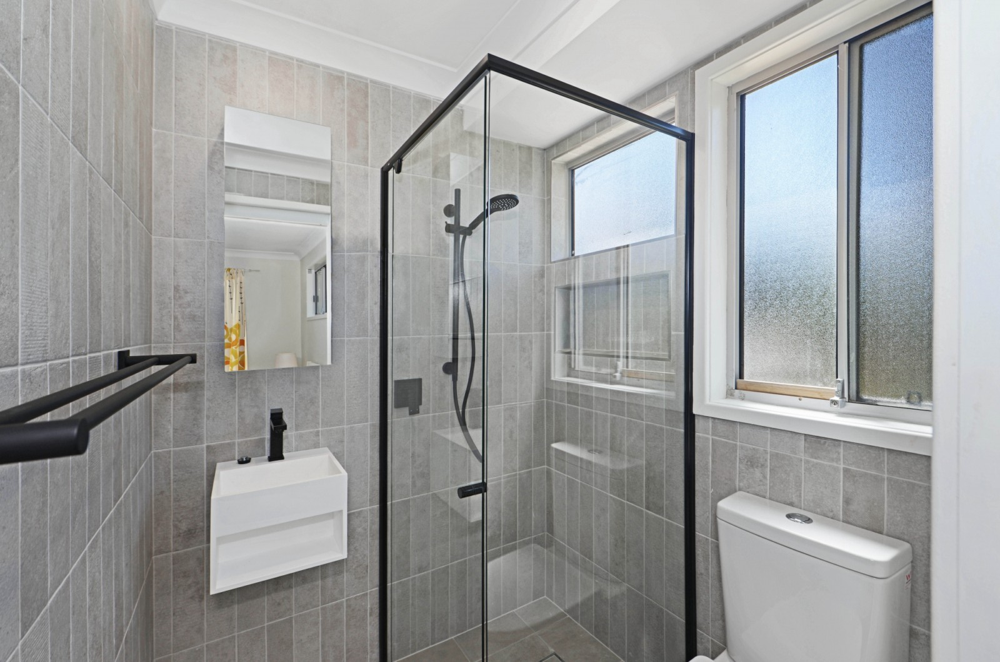
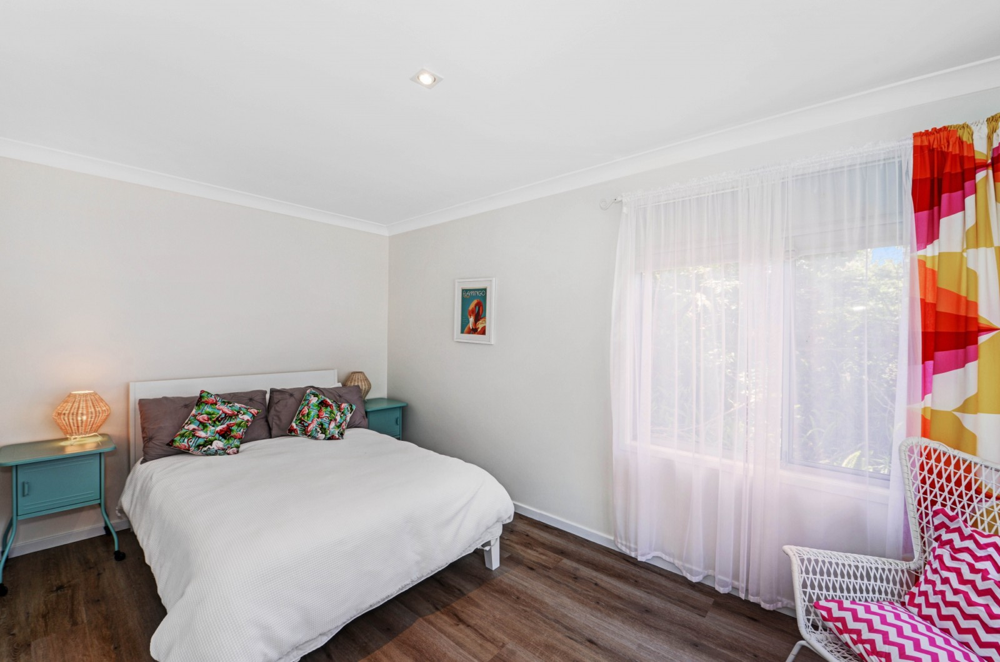
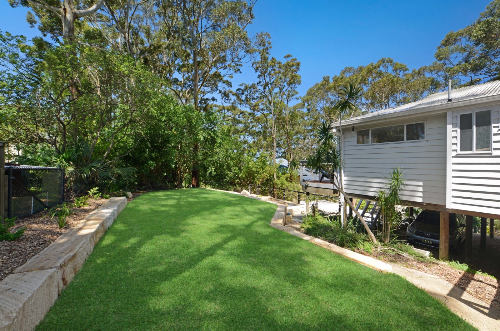
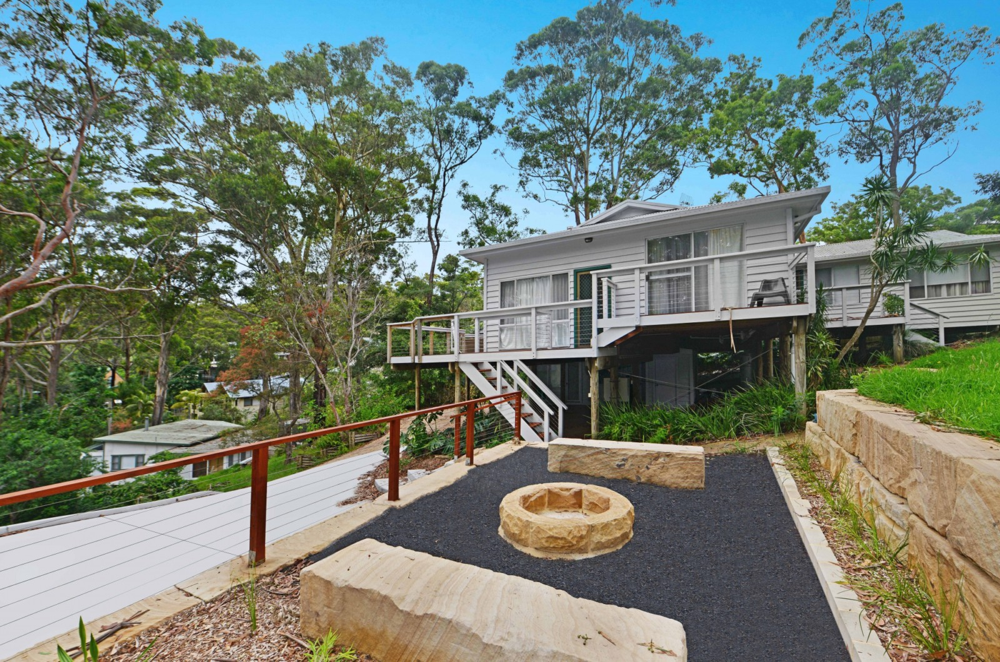
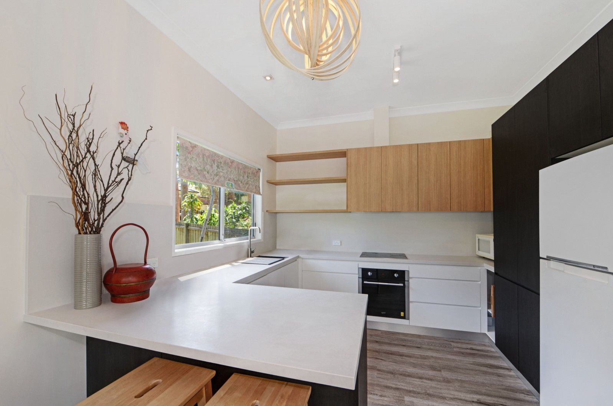

Grass Castle at Mac's
A relaxed family home with a beautiful bush setting in an elevated position a short 300m walk to the beach.
The Grass Castle at Macs is perfectly situated to catch sea breezes in a private position, surrounded by trees and birds with ample offstreet parking for 3 - 4 cars. A large turfed terraced yard is perfect for kids or pets to play. Yard not fenced.
Enjoy sitting in the sunshine on the spacious deck during the day or around the outdoor firepit under the stars at night with the sound of the ocean in the air.
In the colder months, the indoor fire place will keep you toasty on cool evenings.
Freshly painted throughout, with newly renovated bathroom & kitchen, the Grass Castle at Macs is a beach house among the gum trees - a great place to relax and enjoy all that Macmasters Beach has to offer.
- - Sleeps 10 (two bedrooms downstairs accessed externally)
- - 5 Bedrooms
- - 3 Bathrooms
- - fire pit
- - Outdoor setting with BBQ
- - battle axe driveway
Open plan living and dining area which opens onto a huge entertaining deck. The new kitchen is on this level. Up a few stairs to the main bedroom with queen size bed, walk in robe and ensuite. There are also 2 other bedrooms on this level - one has two single beds and the other has a double bed. Main bathroom is three way - separate toilet, vanity and shower and bath. Linen not provided.
Downstairs, externally accessed is the teenagers retreat. Two bedrooms, one with a double bed and the other with a single and a single trundle bed. There is also a basic bathroom for these bedrooms accessed externally. Off street parking for3-4 cars.
Macmasters Beach is located on the Bouddi Peninsula on NSW Central Coast. It is rated as one of the top one hundred surf beaches in Australia. Adjacent to the Surf Club is a tidal swimming pool, which is suitable for young children. Older children can swim at the beach between the flags, but be sure to supervise them as the surf can get rough.
This property is let for holiday purposes only and each booking is subject to our Terms and Conditions. No parties or large gatherings are permitted.
Grass Castle Pictures
        Grass Castle Location
Grass Castle Beach
take a look at the fabulous mcmasters beach, only 200m walk from the Grass Castle:
Grass Castle Prices
| 1 night stay | 1 week stay | 1 month stay | |
|---|---|---|---|
| SUMMER/SPRING | $200 | $1000 | $3500 |
| WINTER/SPRING | $100 | $500 | $1800 |